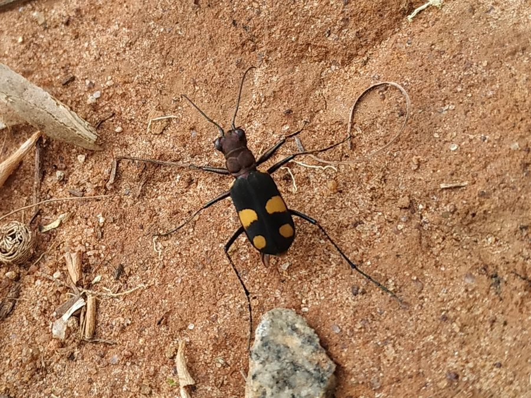

दो-रंगा बाघ भृंगTwo-coloured Tiger Beetle
Cicindela bicolor · Carabidae · INS-0236

- Scientific name वैज्ञानिक नाम
- Cicindela bicolor Fabricius, 1781
- Family कुल
- Carabidae
- Hindi हिंदी
- दो-रंगा बाघ भृंग
- Local names स्थानीय नाम
- two-coloured tiger beetle, do-ranga bagh bhrung, cicindela bicolor, two coloured tiger beetle
- Status here यहाँ की स्थिति
- native
- Movement आवागमन
- Resident, here all year
- Known from कहाँ दर्ज
- Others have published records from the wider Awadh–Purvanchal plain, none yet from Basti–Ayodhya अवध–पूर्वांचल से दूसरों के प्रकाशित अभिलेख, बस्ती–अयोध्या से अभी नहीं
- IUCN IUCN
- not evaluated
- Review समीक्षा
- not yet reviewed
When to look कब देखें
Present all year. साल भर मौजूद।
Tell it apart from इनसे अलग पहचानें
दो-रंगा बाघ भृंग / Two-coloured Tiger Beetle
Cicindela bicolor Fabricius, 1781 — Carabidae
दो-रंगा बाघ भृंग — खेतों की पगडंडियों और खाली जमीन पर धूप में तेजी से दौड़ने वाला एक सुंदर शिकारी भृंग। इसका नाम इसके दोहरे रंग की वजह से पड़ा है: इसका सिर और सीना चमकदार तांबई-लाल होता है, जबकि पंख गहरे चमकीले नीले या हरे रंग के होते हैं। इसके पंखों पर कोई सफेद या पीला धब्बा नहीं होता। यह जमीन पर रेंगने वाले हानिकारक कीड़ों का तेजी से शिकार करता है।
Quick Identification त्वरित पहचान
| Feature | Description |
|---|---|
| Habit | Medium-sized, bicoloured terrestrial predator running on bare soil |
| Head & Thorax | Bright metallic coppery-red, bronze, or golden with fine striations |
| Elytra | Deep metallic blue, violet, or dark green, completely unspotted |
| Mandibles | Long, sharply curved, armed with acute internal teeth for seizing prey |
| Locomotion | Rapid intermittent sprints interspersed with low, buzzing short flights |
Field tip: Look on sunlit, hard-packed earthen footpaths between agricultural fields during humid summer and monsoon mornings.
हिंदी — कैसे पहचानें: तांबई-लाल सिर और सीना, बिना किसी धब्बे के चमकीले नीले पंख, और सूखी पगडंडी पर बिजली जैसी दौड़।
Morphology आकारिकी
Measurements from Fowler (1912):
| Measurement | Value | Source |
|---|---|---|
| Body length | 15–17 mm | Fowler (1912) |
Adult description: Strikingly dimorphic in dorsal coloration. Head and pronotum rich shining coppery-red or brassy-bronze, contrasting boldly with the dark elytra. Head wide across the large, strongly protruding eyes, finely striate between the ocular margins. Labrum transverse, metallic greenish with a pale median border and distinct anterior teeth. Mandibles long, sickle-curved, largely pale whitish on outer face with dark apical denticles.
Elytra: Broad, moderately convex, closely and finely granulate-punctate; uniform deep violaceous-blue, indigo, or dark emerald-green, devoid of any pale spots, bands, or marginal lunules.
Venter & Appendages: Underside shining metallic greenish-blue; legs very long and slender, adapted for high-speed terrestrial sprinting over compacted soil.
हिंदी: इसकी लंबाई 15 से 17 मिमी होती है। आगे का हिस्सा तांबई-सुनहरा और पिछले पंख नीले-बैंगनी होते हैं जिन पर कोई निशान नहीं होता। इसकी टांगें बहुत लंबी और मजबूत होती हैं।
Behaviour & Ecology व्यवहार और पारिस्थितिकी
Cicindela bicolor is diurnal and thermophilic. It frequents open, unshaded ground where the soil surface is compacted and vegetation is sparse.
Adults hunt by visual scanning from low earthen mounds or clods. When prey is detected, the beetle accelerates in a blinding sprint, snaps its toothed mandibles over the quarry, and immediately immobilizes it. If approached by a human or predator, it takes flight with an audible buzz, flying three to six metres before landing abruptly facing the intruder.
The larva excavates a vertical burrow in dry or moist loam along path edges. It positions its head flush with the ground, seizing crawling prey that wanders within reach.
हिंदी: यह कीड़ा खुली धूप वाली पगडंडियों पर रहता है। यह अपनी तेज नजर से शिकार को देखता है और झपटकर पकड़ लेता है। आहट पाते ही यह थोड़ा उड़कर दूर चला जाता है।
Life Cycle / Phenology जीवन चक्र
| Season / Month | Stage & Activity |
|---|---|
| May–June (Pre-monsoon) | Adults emerge as soil warms up, hunting actively along path margins |
| July–August (Monsoon) | Mating and oviposition in compacted loam soil near field edges |
| September–October | Larval development through three instars in subterranean burrows |
| November–December | Larval grubs deepen burrows and plug entrances with soil plugs |
| January–April (Winter/Spring) | Overwintering in underground chambers before spring pupation |
Typically univoltine in the Gangetic plain, with adults displaying peak surface activity during the hot pre-monsoon and early monsoon months.
हिंदी: गर्मियों के अंत में यह जमीन से निकलता है। बरसात में मादा पगडंडी की मिट्टी में अंडे देती है। इसकी इल्ली जमीन में बिल बनाकर रहती है और जाड़ों में बिल बंद करके सो जाती है।
Host Plants or Prey आहार
- Adult Diet: Active predator on terrestrial insects including small grasshoppers, field crickets, ants, termites, and caterpillars.
- Larval Prey: Ground-dwelling ants, collembolans, and beetle larvae falling or walking into the burrow entrance.
- Vegetation Use: Non-phytophagous; utilizes field weeds and grasses like Ban Tulsi merely as perches and windbreaks.
हिंदी: यह पूरी तरह से मांसाहारी है। यह फसलों के लिए हानिकारक छोटे टिड्डों, दीमक, चींटियों और इल्लियों को मारकर खाता है।
Predators / Natural Enemies शत्रु
- Avian Predators: Black Drongo, Common Myna, and babblers hunt adults along rural dirt tracks.
- Predatory Invertebrates: Asilid robber flies capture flying adults; large wolf spiders attack resting beetles.
- Larval Parasitoids: Parasitic tiphiid wasps burrow down larval shafts to paralyze grubs.
हिंदी: पगडंडियों पर चलने वाली मैना और भुजंगे इन्हें पकड़ते हैं। शिकारी मक्खियां और बड़ी मकड़ियां भी इनका शिकार करती हैं।
Agricultural / Human Relevance कृषि प्रासंगिकता
- Beneficial agroecosystem ally: Suppresses agricultural pests in field borders, consuming young grasshopper nymphs, plant bugs, and armyworm caterpillars.
- Indicator of soil structure: Abundant along undisturbed field bunds and unpaved pathways, indicating minimal chemical soil compaction.
- Harmless to humans: Possesses no stinging apparatus, though large adults can administer a harmless pinch with mandibles if handled.
हिंदी: यह खेतों की मेड़ों पर रहकर फसलों को नुकसान पहुंचाने वाले कीड़ों को खाता है, जिससे यह किसानों का बहुत उपयोगी मित्र कीट है।
Expected Locally स्थानीय रूप से अपेक्षित
Not a field record. Written from published accounts for eastern Uttar Pradesh. No confirmed local sighting yet — if you have seen it, that is what the atlas needs.
अभी तक स्थानीय पुष्टि नहीं। यह विवरण प्रकाशित स्रोतों से है, किसी अवलोकन से नहीं।
Expected across the agricultural margins, village cart-tracks, pasture clearings, and unpaved canal embankments of Basti, Ayodhya, and Sant Kabir Nagar where firm, sunlit soil occurs. GBIF holds published records from the wider Awadh–Purvanchal plain, none yet from Basti–Ayodhya. A first local record would be a photograph of an adult showing the contrasting coppery head and unspotted blue elytra, submitted through the About page.
Distribution वितरण
Global range: Native to South Asia, including India, Pakistan, Nepal, and Bangladesh.
In India: Distributed throughout the northern plains, the Gangetic basin, Central India, and parts of peninsular India (Fowler 1912).
In Uttar Pradesh: Broadly distributed across agricultural districts in the plains.
In Basti district / eastern UP: Expected along rural village trails and unpaved roadsides in all farming blocks.
हिंदी: यह भृंग भारत, पाकिस्तान और नेपाल के मैदानी भागों में पाया जाता है। उत्तर प्रदेश के खेती-किसानी वाले सभी जिलों में यह मौजूद है।
Research Questions शोध प्रश्न
- What is the predation rate of Cicindela bicolor on newly hatched grasshopper nymphs in Basti? / बस्ती में यह भृंग टिड्डियों के नन्हे बच्चों का किस दर से शिकार करता है?
- How does heavy tractor compaction on rural dirt tracks affect larval burrow density? / पगडंडियों पर ट्रैक्टर चलने से इसकी इल्लियों के बिलों पर क्या असर पड़ता है?
- What thermal range on sunlit soil surfaces maximizes foraging sprints? / मिट्टी की सतह का तापमान कितना होने पर यह सबसे फुर्ती से शिकार पकड़ता है?
- Does pesticide drift from crop fields reduce adult populations on adjoining field bunds? / फसलों पर कीटनाशक छिड़काव से मेड़ों पर रहने वाले इन भृंगों पर क्या प्रभाव पड़ता है?
- Can village children distinguish this bicoloured beetle from spotted tiger beetles on footpaths? / क्या ग्रामीण बच्चे रास्ते पर चलने वाले इस दो-रंगे भृंग को चित्तीदार भृंगों से अलग पहचान सकते हैं?
Similar Species मिलती-जुलती प्रजातियाँ
| Species | How to tell apart | हिंदी |
|---|---|---|
| Eight-spotted Tiger Beetle (Cicindela octonotata) | Elytra marked with eight bold yellowish spots; occurs on river sand, not hard paths | पंखों पर आठ पीले धब्बे, पगडंडी की जगह नदी की रेत पर मिलना |
| Cicindela viridilabris | Smaller; elytra dark bronze with pale marginal markings | छोटा आकार, पंखों पर हल्के किनारेदार निशान |
| Six-spotted Ground Beetle (Anthia sexguttata) | Much larger, flightless, velvety black with six large white spots | बहुत बड़ा, उड़ने में असमर्थ, काला शरीर और छह सफेद धब्बे |
Field rule: A tiger beetle on firm dirt paths with a bright coppery-red head and thorax contrasting against solid unspotted deep blue or green elytra identifies Cicindela bicolor.
Taxonomy & Classification वर्गीकरण
Original description. Described by Johan Christian Fabricius in 1781 as Cicindela bicolor in Species Insectorum, vol. 1.
Subspecies. Monotypic across the northern Indian plains; no valid subspecies are currently recognized.
Family and order placement. Placed in the ground beetle family Carabidae, subfamily Cicindelinae, in the order Coleoptera.
IUCN status rationale. Not evaluated on the IUCN Red List; an abundant and widespread species utilizing extensive agricultural landscapes in India.
हिंदी: जोहान क्रिश्चियन फैब्रिकियस ने 1781 में इसका पहला वैज्ञानिक विवरण दिया था। यह कैराबिडी कुल का सदस्य है।
Photo Gallery फोटो गैलरी
No photos yet — add field photos to media/species/two_coloured_tiger_beetle/ and run node scripts/sync_photos.js.
Photos needed आवश्यक फोटो
- [ ] Adult hunting on sunlit dirt trail showing bicoloured dorsal pattern (पगडंडी पर दौड़ता दो-रंगा भृंग)
- [ ] Close-up of coppery head and sickle mandibles (सिर और मुड़े जबड़ों का क्लोज-अप)
- [ ] Larval burrow entrance on packed soil (मिट्टी में बना बिल का मुहाना)
References संदर्भ
- Fabricius, J.C. (1781). Species Insectorum, vol. 1. Hamburg.
- Fowler, W.W. (1912). The Fauna of British India, including Ceylon and Burma: Coleoptera: General Introduction and Cicindelidae and Paussidae, p. 378. Taylor and Francis, London.
- Acciavatti, R.E. & Pearson, D.L. (1989). The tiger beetle genus Cicindela (sensu lato) of India and adjacent regions. Annals of Carnegie Museum, 58, vol. 58.
- Pearson, D.L., Wiesner, J., Acciavatti, R.E., Uniyal, V.P. & Anichtchenko, A. (2020). A Field Guide to the Tiger Beetles of India: Identification and Biology of the Cicindelidae. Bishen Singh Mahendra Pal Singh, Dehradun.
- Andrewes, H.E. (1930). Catalogue of Indian Insects: Part 18, Carabidae. Government of India, Calcutta.
- GBIF Occurrence Data — Cicindela bicolor Fabricius, 1781, India (2025).
Source file: species/fauna/insects/two_coloured_tiger_beetle.md